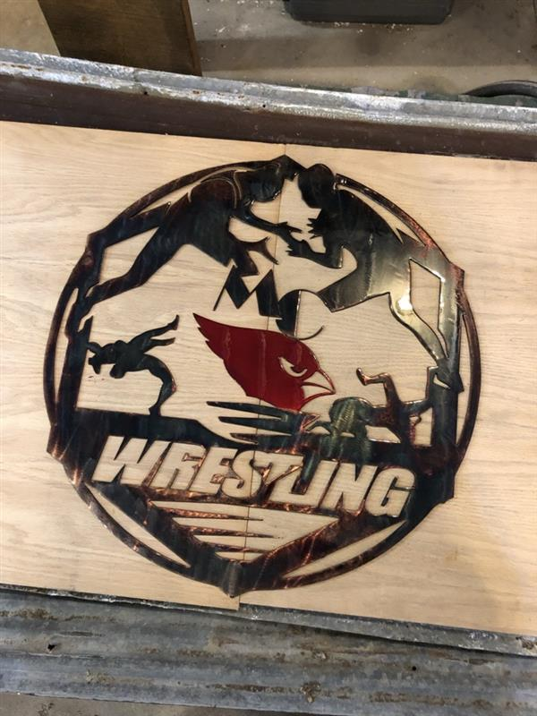
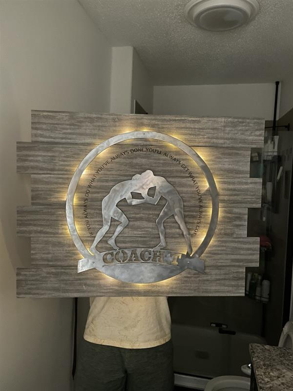

Lessons Learned
---
These signs were designed using CorelDRAWX7, cut using a CNC plasma table, and either painted or stained for color.
All but one of the signs were made with the sole purpose of being a gift while the American flag was made as a commission.
The first time I tried making one of these was senior year of high school and I instantly loved the process. It was incredibly
rewarding to start with a piece of scrap metal and slowly transform it into something unique and meaningful.
-
Process for making a sign
- Design (repeat as needed)
- Use the plasma table to cut the metal
- Grind the metal (Here's a Youtube video of what that looks like)
- Use sandpaper to further prep the surface
- Tape off the design with painter's tape
- Paint (I used spray paint) or stain
- Let dry and apply a clear coat
One of my favorite parts of the process by far was designing the cuts; it was a great mix of free creativity and restriction from the medium. It took a cut or two before I fully understood that you can't just throw text on a design without being incredibly deliberate in connecting all the pieces with supports.
What I expected the cut to end up like vs what it actually did
Some of the smaller steps, like using sandpaper on the metal, probably could have been skipped, but taking the time to very intentionally get rid of any imperfections made a world of difference. The difference in care might not be noticable to other people, but you will forever know of any imperfection in your work. It's much like the story of the carpenter.

